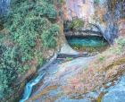

介绍
苍山位于大理洱海西侧，风光极为秀美，其主峰的积雪风光巍峨壮观，是大理“风花雪月”四景之一。苍山山间云雾变幻莫测，有“望夫云”、“玉带云”等奇秀形状，登上山顶，还可以俯瞰洱海、大理的优美风光。
欣赏苍山美景，可以从洱海湖滨各个村镇远观，也可以走进苍山景区，近距离感受。苍山的山腰间修有一条长约18公里的游山步道，称为玉带云游路，北起小岑峰，南至圣应峰，沿途经过多座山峰，也经过清碧溪、七龙女池、中和寺等景点。走在海拔二千多米的玉带路上，随时可俯瞰大理坝子和洱海风光，视野开阔，让人心旷神怡。
开放时间
全年 08:30-15:00
优待政策
儿童：身高1.2米（不含1.2米）及以下儿童免票，免费；身高1.2米（含1.2米）至1.4,米（含1.4米）的儿童实行半票，半价
服务设施
园内交通：参考价格：110元/人；参考价格：往返100元/人；地址：中和索道入口处
必看贴士
1. 苍山山体雄厚，山路复杂，建议游览时不要偏离玉带路，否则误入深山极易迷路。
2. 苍山海拔较高，早晚温度较低，另外由于山风阴冷，建议上山时携带御寒衣物
3. 一些当地人会提供骑马上苍山的服务，但舒适度和安全系数都比较低，建议谨慎尝试。
附近景点
七龙女池景区
4.9分
直线距离1.2km
玉带云游路
4.5分
直线距离1.4km
玉局峰
4.3分
直线距离2.0km
凤眼洞
5.0分
直线距离2.1km
中和寺
4.3分
直线距离2.8km
苍山大峡谷
5.0分
直线距离2.9km

清碧溪
4.4分
直线距离3.0km